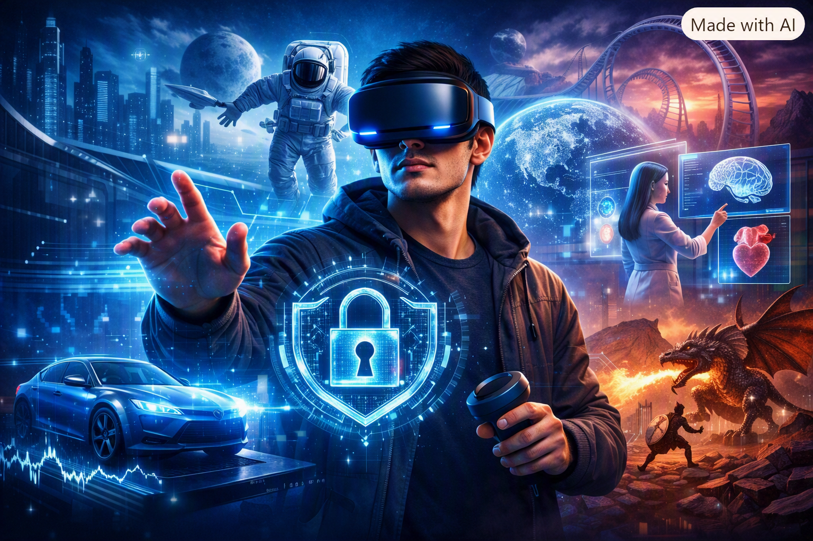

¿Qué es?
La realidad virtual (RV) traslada a la persona a un entorno creado por computador. Para lograrlo se usan visores que cubren la vista y sensores que detectan el movimiento de la cabeza y de las manos, de modo que la experiencia se siente inmersiva.
La realidad aumentada (RA), en cambio, no reemplaza el entorno: agrega imágenes, textos o modelos 3D sobre lo que la persona ya ve, ya sea con la cámara de un celular o con gafas especiales.
Las diferencias principales entre ambas son:
- La RV crea un entorno completamente digital; la RA suma elementos digitales al entorno real.
- La RV suele requerir un visor; la RA puede usarse con un celular o una tableta.
- En la RV la persona se aísla del entorno físico; en la RA sigue viéndolo.
Aplicaciones en educación
En el aula, estas tecnologías permiten ver y experimentar lo que en un libro solo se puede imaginar. Los estudiantes pueden recorrer un museo o un sitio histórico desde el salón, explorar un modelo 3D del cuerpo humano o del sistema solar, y practicar experimentos de laboratorio sin riesgos ni gasto de materiales. Además, facilitan el aprendizaje de habilidades prácticas mediante simulaciones que se pueden repetir las veces que sea necesario.
Aplicaciones en industria
En la industria se usan sobre todo para capacitar al personal y reducir errores. Los operarios pueden entrenarse con simulaciones de una máquina antes de manejarla en la vida real, y los ingenieros pueden revisar prototipos de un producto en 3D sin fabricarlos. La realidad aumentada también ayuda en el mantenimiento: unas gafas pueden mostrar instrucciones o señalar la pieza que se debe revisar directamente sobre el equipo.
Aplicaciones actuales de la Realidad Virtual
- Educación: simulaciones interactivas para aprender mejor.
- Videojuegos: experiencias inmersivas en mundos digitales.
- Medicina: terapias y entrenamientos quirúrgicos.
Comparativa de dispositivos VR
| Dispositivo | Características | Precio aproximado |
|---|---|---|
| Meta Quest 2 | Autónomo, buena relación calidad-precio | USD 299 |
| PlayStation VR2 | Compatible con PS5, alta calidad gráfica | USD 549 |
| HTC Vive Pro | Profesional, resolución avanzada | USD 799 |
Imagen representativa
